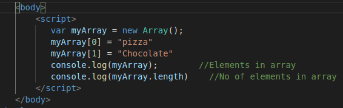

It can store any thing in any combination
Task 1/6: Create an array. Initialize the array. Output the elements . Output the length of array
Sol:
 
Task 2/6: Repeat task 1 with different syntax
Sol:

Task 3/6: To push a new element in array in end
Sol:


We can use myArray.unshif("Paratha"); //Adds it in the beginning
Task 4/6: To delete element in array
Sol:


myArray.splice(IndexNo,How_Many_Element_from_Index_No_to_delete)
to delete last element
myArray.pop(); //deletes last item
to delete first element
myArray.shift(); //deletes first item
Task 5/6: To insert an element in array at specific location
Sol:


Task 6/6: Replace Element at a specific index in array
Sol:


Array of Objects

2D ARRAY


Using Indexof method to check for the presence of item in array
var res = cars.indexOf("xsauvha") //returns -1 if not found in array of cars